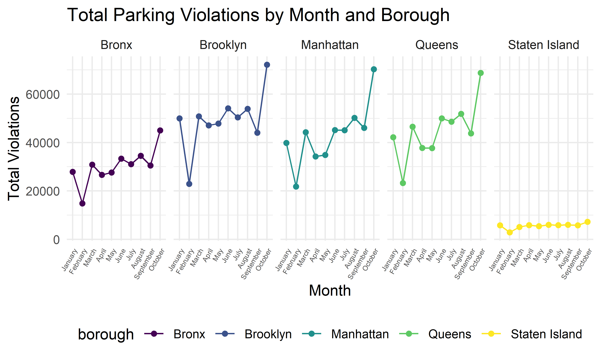
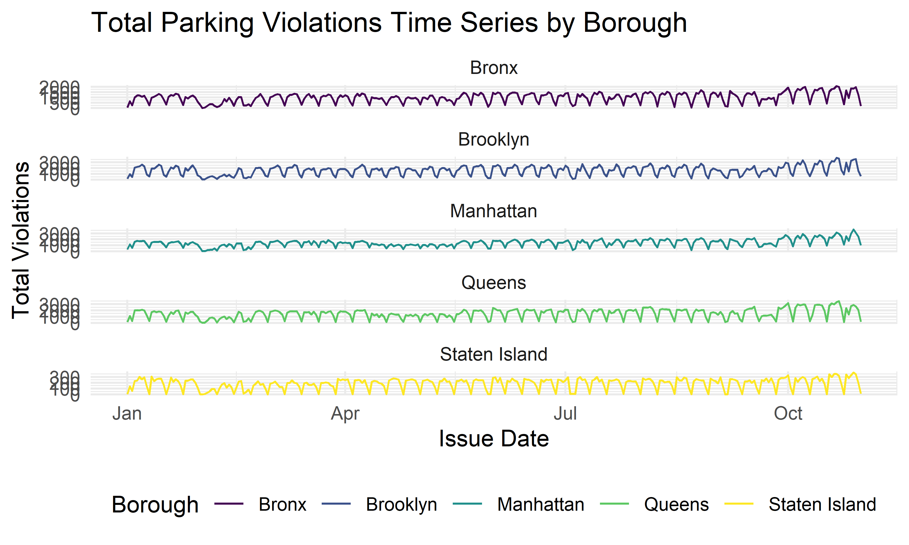
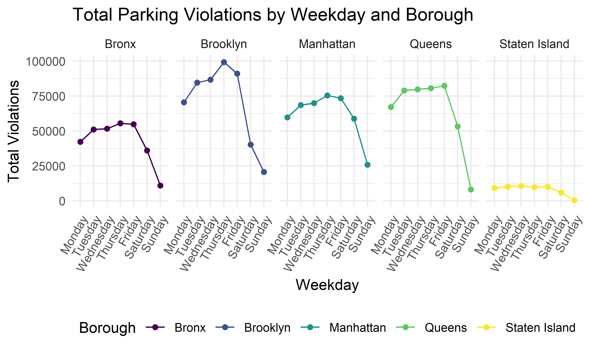

library(tidyverse)
library(ggplot2)
library(lubridate)
source("code/data_cleaning.R")
source("code/formatting.R")For this part of data exploratory, we want to use visualization over time to find out some pattern of parking violation frequency in NY in 2021. We want to know how month, weekday and specific time of the day are associated with the parking violation counts.
violation %>%
mutate(month = month.name[as.numeric(month)]) %>%
mutate(month = as.factor(month),
month = fct_relevel(month, "January", "February", "March", "April", "May", "June", "July", "August", "September", "October")) %>%
relocate(month) %>%
group_by(borough, month) %>%
summarize(n_obs = n()) %>%
ggplot(aes(x = month, y = n_obs, group = 1)) +
geom_point() + geom_line() +
theme(axis.text.x = element_text(angle = 60, hjust = 1, size = 5) ) +
labs(title = "The observation of parking violations of each month \n in 2021 for each borough") + facet_wrap(~ borough, nrow = 1)
The above plot shows the total number of parking violation within each month for different boroughs. From the plot we can see that all boroughs have a similar pattern, the total violation counts in February is lower, and the total violation counts in October is higher comparing to other months. We can also see that total violation count in Staten Island is much more lower than the other four boroughs.
violation %>%
mutate(month = month.name[as.numeric(month)]) %>%
mutate(month = as.factor(month),
month = fct_relevel(month, "January", "February", "March", "April", "May", "June", "July", "August", "September", "October", "November", "December")) %>%
relocate(month) %>%
group_by(month, day) %>%
summarize(n_obs = n()) %>%
ggplot(aes(x = day, y = n_obs, group = 1)) +
geom_point(size = 0.5) + geom_line() +
theme(axis.text.x = element_text(angle = 60, hjust = 1) ) +
labs(title = "The observation of parking violations of day in each \n month in 2021") + facet_wrap(~ month, nrow = 3)
After visualizing the monthly pattern, we also want to know if there is any pattern within each month. The above plot shows the total daily parking violation counts for each month, and we can observe a weekly pattern here.
violation %>%
mutate(weekday = as.factor(weekday)) %>%
mutate(weekday = fct_relevel(weekday, "Monday", "Tuesday", "Wednesday", "Thursday", "Friday", "Saturday", "Sunday")) %>%
relocate(weekday) %>%
group_by(borough, weekday) %>%
summarize(n_obs = n()) %>%
ggplot(aes(x = weekday, y = n_obs, group = 1)) +
geom_point() + geom_line() +
theme(axis.text.x = element_text(angle = 60, hjust = 1) ) +
facet_wrap(~ borough, nrow = 1) +
labs(title = "The observation of parking violations vs. weekday in each \n borough in 2021")
In order to explore more of the weekly parking violation pattern, we plot the violation counts of each weekday for every borough. We can see that all boroughs have a similar pattern, where Saturday has the lowest violation counts and Friday had the second lowest counts comparing to all other weekdays.
violation %>%
mutate(hour = as.numeric(hour)) %>%
group_by(borough, hour) %>%
summarize(n_obs = n()) %>%
filter(hour <= 24) %>%
ggplot(aes(x = hour, y = n_obs)) + geom_point() + geom_line() +
labs(title = "The total number of violations during 24 hours \n of a day in 2021 for each borough") +
facet_wrap(~ borough, nrow = 2) Furthermore, we also try to explore the 24-hour violation pattern within a day. From the above plot, all boroughs also show a similar daily pattern. The number of violations tends to increase from 6:00 AM to 8:00 AM, remain high in 8:00 AM to 2:00 PM, decrease from 2:00PM to 7:00 PM, and remain low from 7:00 PM to 5:00 AM.
fit_df = violation %>%
mutate(month = as.factor(month)) %>%
group_by(month, weekday, day) %>%
summarize(n_obs = n())
fit_model_weekday = lm(n_obs ~ weekday, data = fit_df)
anova(fit_model_weekday) %>% knitr::kable()| Df | Sum Sq | Mean Sq | F value | Pr(>F) | |
|---|---|---|---|---|---|
| weekday | 6 | 1188117175 | 198019529 | 60.08402 | 0 |
| Residuals | 297 | 978825984 | 3295710 | NA | NA |
fit_model_month = lm(n_obs ~ month, data = fit_df)
anova(fit_model_month) %>% knitr::kable()| Df | Sum Sq | Mean Sq | F value | Pr(>F) | |
|---|---|---|---|---|---|
| month | 9 | 494640293 | 54960033 | 9.662275 | 0 |
| Residuals | 294 | 1672302865 | 5688105 | NA | NA |
In order to go more about the how month and weekday are associated with the frequency of parking violation. We try to use one-way anova test for weekday and month. From the above results, both the p-values are 0, so we can say that the parking violation counts are associated with month and weekday.